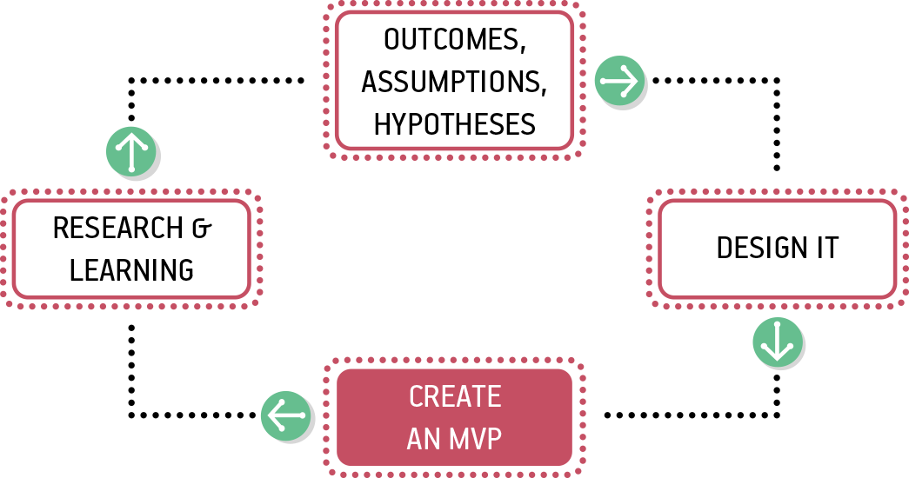
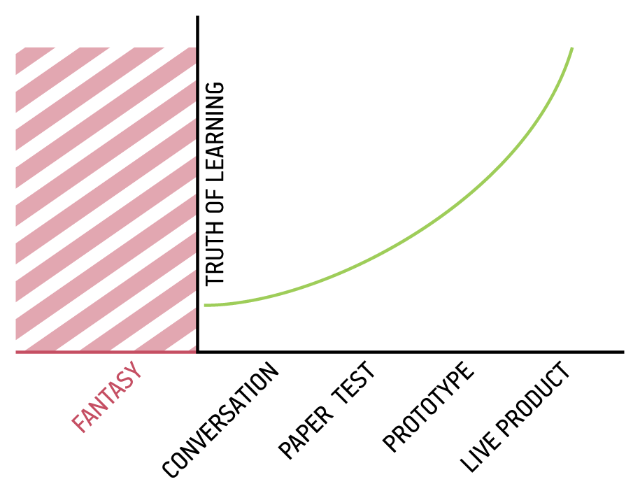
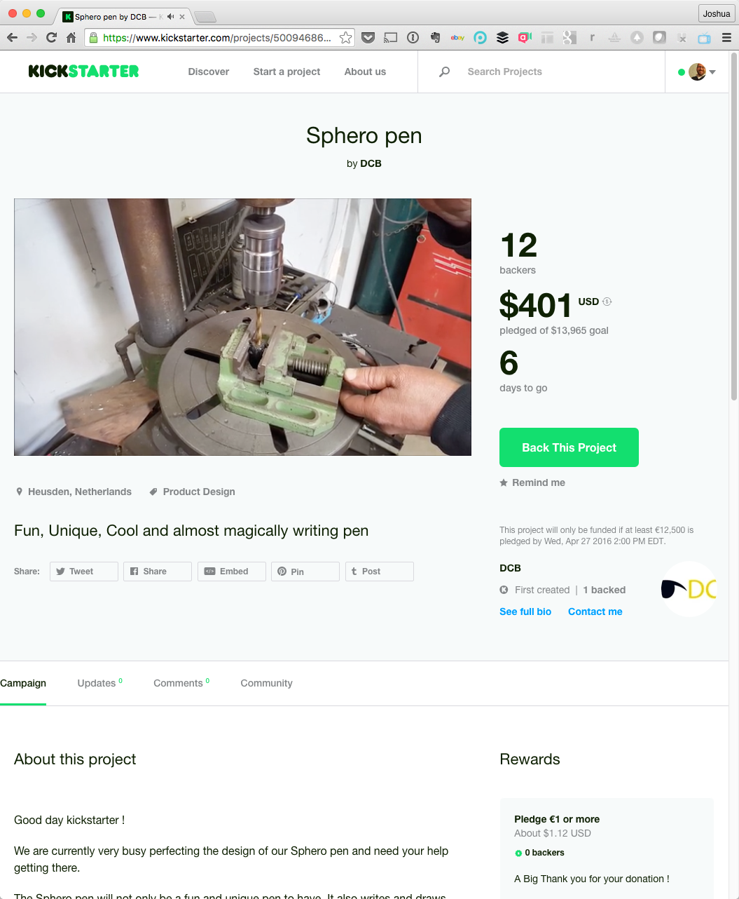
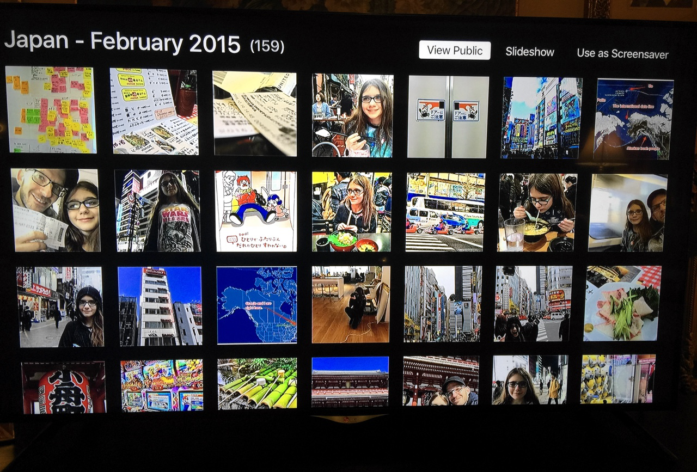
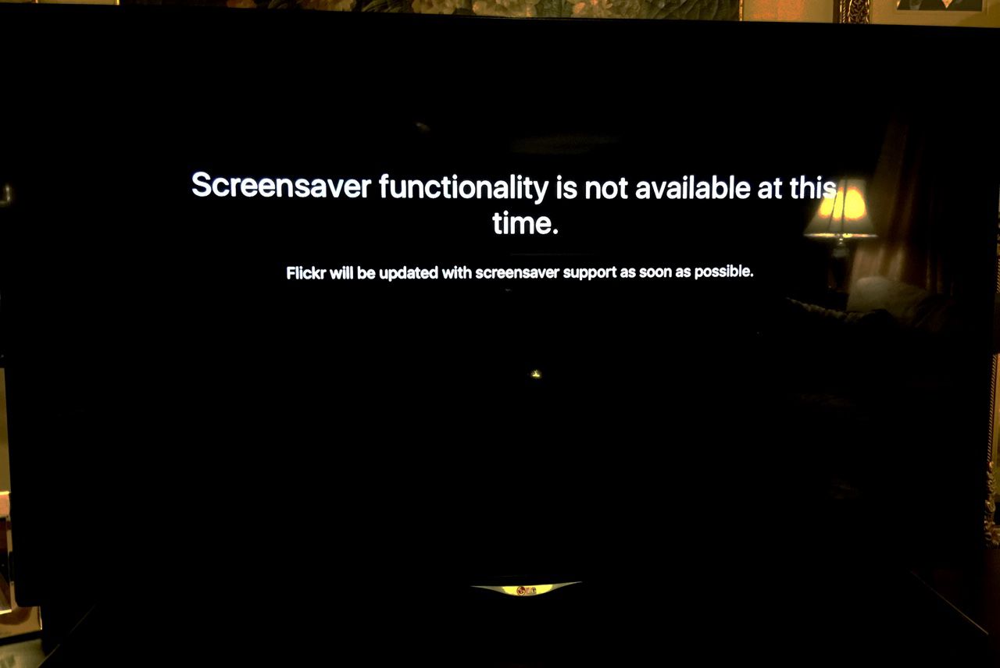
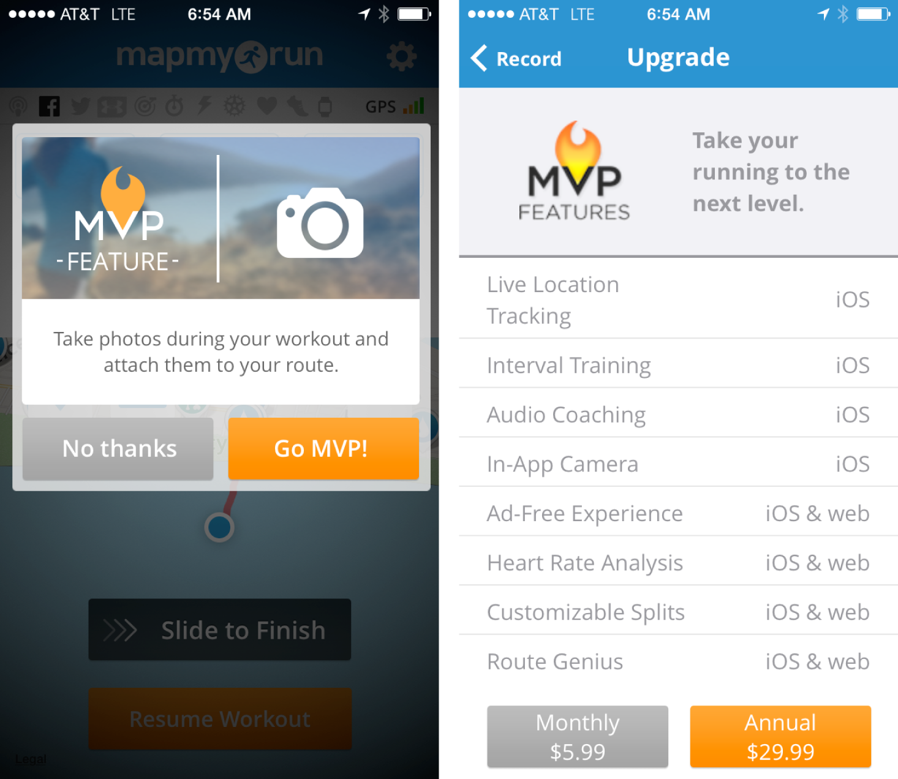
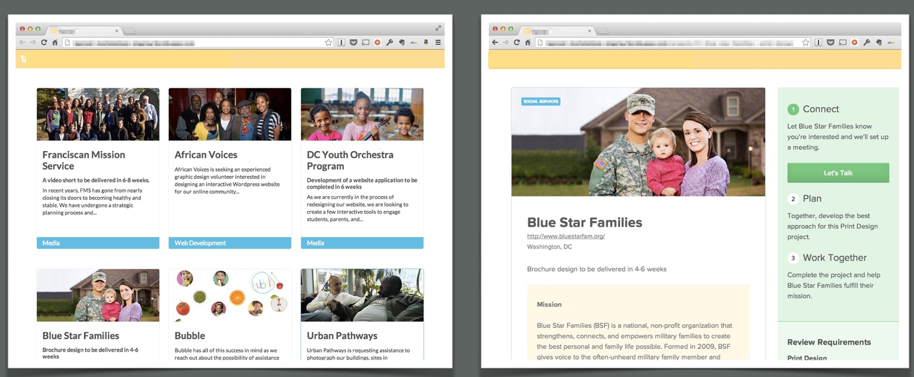
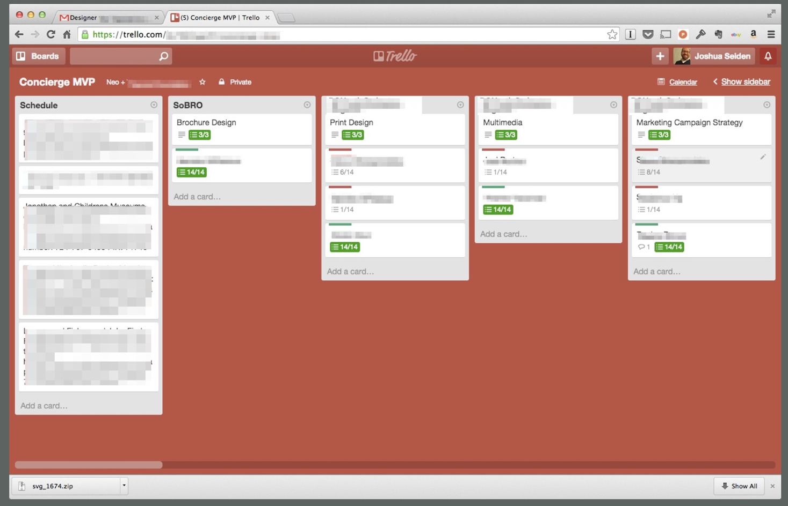
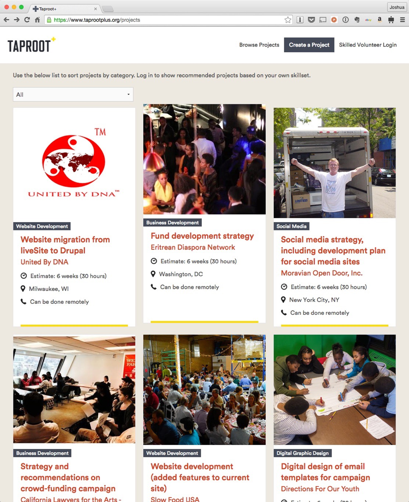

All life is an experiment. The more experiments you make, the better.
—Ralph Waldo Emerson
With the parts of your hypothesis now defined, you’re ready to determine which product ideas are valid and which ones you should discard. In this chapter, we discuss the Minimum Viable Product (MVP) and its relationship to Lean UX.

Lean UX makes heavy use of the notion of MVP. MVPs help us test our assumptions—will this tactic achieve the desired outcome?—while minimizing the work we put into unproven ideas. The sooner we can find which features are worth investing in, the sooner we can focus our limited resources on the best solutions to our business problems. This is an important part of how Lean UX minimizes waste.
In addition, we cover the following:
What is an MVP anyway? We’ll resolve the confusion about what the phrase means.
Creating an MVP. We’ll share a set of guidelines for creating MVPs.
Examples of MVPs. We’ll share some inspiration and models that you can use in different situations.
We’ll talk about how to create prototypes for Lean UX, and what you’ll need to consider when selecting a prototyping approach.
If you ask a room full of technology professionals the question, “What is an MVP?” you’re likely to hear a lengthy and diverse list that includes such gems as the ones that follow:
“It’s the fastest thing we can get out the door that still works.”
“It’s whatever the client says it is.”
“It’s the minimum set of features that allow us to say ‘it works.’”
“It’s Phase 1.” (and we all know about the likelihood of Phase 2)
The phrase MVP has caused a lot of confusion in its short life. The problem is that it gets used in two different ways. Sometimes, teams create an MVP primarily to learn something. They’re not concerned with delivering value to the market—they’re just trying to figure out what the market wants. In other cases, teams create a small version of a product or a feature because they want to start delivering value to the market as quickly as possible. In this second case, if you design and deploy the MVP correctly, you should also be able to learn from it, even if that’s not the primary focus.
Let’s take, for example, a medium-sized company we consulted with recently. They were exploring new marketing tactics and wanted to launch a monthly newsletter. Newsletter creation is no small task. You need to prepare a content strategy, editorial calendar, layout and design, as well as an ongoing marketing and distribution strategy. You need writers and editors to work on it. All in all, it was a big expenditure for the company to undertake. The team decided to treat this newsletter idea as a hypothesis.
The team asked themselves: What’s the most important thing we need to know first? The answer: Was there enough customer demand for a newsletter to justify the effort? The MVP the company used to test the idea was a sign-up form on their current website. The sign-up form promoted the newsletter and asked for a customer’s email address. This approach wouldn’t deliver any value to the customer—yet. Instead, the goal was to measure demand and build insight on what value proposition and language drove sign-ups. The team felt that these tests would give them enough information to make a good decision about whether to proceed.
The team spent half a day designing and coding the form and was able to launch it that same afternoon. The team knew that their site received a significant amount of traffic each day: they would be able to learn very quickly if there was interest in the newsletter.
At this point, the team made no effort to design or build the actual newsletter. After the team had gathered enough data from their first experiment, and if the data showed that its customers wanted the newsletter, the team would move on to their next MVP, one that would begin to deliver value and create deeper learning around the type of content, presentation format, frequency, social distribution, and the other things they would need to learn to create a good newsletter. The team planned to continue experimenting with MVP versions of the newsletter—each one improving on its predecessor—that would provide more and different types of content and design, and ultimately deliver the business benefit they were seeking.
When it comes to creating an MVP, the first question is always what is the most important thing we need to learn next? In most cases, the answer to that will either be a question of value or a question of implementation.
Your prioritized list of hypotheses has given you several paths to explore. As a team, discuss the first hypothesis in your list with the following framework:
What’s the most important thing we need to learn first (or next) about this hypothesis? In other words, what’s the biggest risk currently associated with this approach?
What’s the least amount of work we can do to learn that? This isn’t lazy: it’s Lean. There’s no reason to do any more work than you need to in order to determine your next step.
The answer to the second question is your MVP. You will use your MVP to run experiments and the outcome of those experiments will inform you as to whether your hypothesis was correct. These experiments should provide you with enough evidence to decide whether the direction you are exploring should be pursued, refined, or abandoned.
Here are some guidelines to follow if you’re trying to understand the value of your idea:
Here are some guidelines to follow if you’re trying to understand the implementation you’re considering launching to your customers:
MVPs might seem simple, but in practice but can prove challenging. Like most skills, the more you practice, the better you become at doing it. In the meantime, here are some guidelines to building valuable MVPs:

Let’s take a look at a few different types of MVPs that are in common use:

Figure 5-4 shows a feature fake that Flickr used. In this case, they offered a button labeled “Use as screensaver” that was ostensibly meant for the user to specify a photo album as the screensaver for their device. When users clicked the button, though, they were greeted by the screen shown in Figure 5-5. Flickr used this to gather evidence that a customer would like this feature. By measuring click rates, they could assess demand for this feature before they built it.


Figure 5-6 presents another feature-fake example. Here, MapMyRun offered the opportunity to take and upload photos while jogging using two modal overlays. No feature existed until they got an indication that a) people wanted this feature, and b) how much they’d be willing to pay for it.

In 2014, our company worked with an organization called Taproot Foundation to create an online marketplace for pro bono volunteers.
Pro bono is when a professional donates his skills to help a worthy cause. Unlike the unskilled volunteer services many of us participate in on the weekend, pro bono service involves using your professional talents in a volunteer context.
Our client, Taproot Foundation, had been helping pro bono volunteers and nonprofit organizations find each other for years, but they had always delivered this matching service “by hand,” through phone calls, emails, and in-person meetings. Now, they wanted to bring that process online: they wanted to create a website that would act as a two-sided marketplace for pro bono volunteers and the organizations that could benefit from their services.
As we started the project, we faced a big set of questions: how should the matching process work? Should the volunteers advertise their services? Should the organizations advertise their projects? What would work better? And after the parties found each other on the website, how should they get started with the project? How should the organizations communicate their needs? How should the volunteers scope the work? Even little details were big questions: how should the parties schedule their first phone call?
We decided this was a perfect time to create a Wizard of Oz MVP. We built a simple website, handcoding just the few static pages that we needed to make it look like we were open for business. We began with about a dozen pages in all: one index page, and then a page for each of the 12 pilot projects we had lined up. Behind the scenes, we had a community manager assemble a list of potential volunteers, and we emailed them, sending them a call to action and a link to our new site. To maintain the illusion that we had a running system, we made sure the email looked like it came from our new system, not from the community manager.
When volunteers clicked the link in the email, they saw our Wizard of Oz site (Figure 5-7). When they used the site to apply for a volunteer opportunity, it looked to them like they were interacting with the system, but behind the scenes, it simply emailed the community manager and team. We tracked all of our interactions in a simple Trello board (Figure 5-8), which served as our “database.”


We operated the system this way for a few months, gradually learning from our interactions, updating our business processes, and adding automation and other updates to the website as we learned. Eventually, we added a real functional backend, eliminating much of the “man behind the curtain” aspect of the site. We also updated the visual style, applying some mature graphic design polish (Figure 5-9)—after we had learned enough to understand how to communicate our brand.

By using a Wizard of Oz approach, we were able to pilot the high-risk parts of the design—the design of the business processes—learn as we went along, and eliminate the risk of spending lots of time and money designing and building the wrong thing.
One of the most effective ways to create MVPs is by prototyping the experience. A prototype is an approximation of an experience that allows you to simulate what it is like to use the product or service in question. It needs to be clickable (or tappable). At the same time, your goal should be to spend as little effort as possible in creating the prototype. This makes your choice of prototyping technique important.
Choosing which technique to use for your prototype depends on several factors:
Who will be interacting with it?
What you hope to learn
What you already know to be true
How much time you have to create it
It’s critical to define the intended audience for your prototype. This allows you to create the smallest possible prototype that will generate meaningful feedback from this audience. For example, if you’re using the prototype primarily to demo ideas to software engineers on your team, you can largely omit primary areas of the product that aren’t being affected by the new experience—the global navigation, for example. Your developers know those items are there and that they’re not changing, so you don’t need to illustrate these items for them.
Stakeholders, often less familiar with their own product than they’ll ever admit to, will likely need a greater level of fidelity in the prototype to truly grasp the concept. To meet the various needs of these disparate audiences, your prototyping toolkit should be fairly broad. Let’s take a look at the different prototyping techniques and consider when to use each.
The list of prototyping tools changes regularly, with new, exciting tools emerging frequently. Trying to capture a comprehensive and up-do-date list in a book is difficult. If you’ve read the first edition of this book, you’ll know how quickly such a list goes out of date. Instead of listing out specific tools here, we’ve created a list, which is available at http://www.leanuxbook.com/links.
Made of the most accessible components—paper, pens, and tape—paper prototypes give you the ability to simulate experiences in a quick, crafty, fun way. No digital investment is necessary. Using tactics like flaps to show and hide different states on a page or even creating a “window” for a slideshow of images to move through, you can begin to give the team a sense of how the product should function. You’ll be able to get an immediate sense of what is available in the experience and what is missing. Paper prototyping can give you a sense of how the workflow is starting to coalesce around the interface elements you’ve assembled. This method is especially helpful with touch interfaces that require the user to manipulate elements on a screen.
Rapid iteration and duplication of the prototype can become time-consuming and tedious.
The simulation is very artificial, because you’re not using the actual input mechanisms (mouse, track-pad, keyboard, touch screen, etc.).
Feedback is limited to the high-level structure, information architecture, and flow of the product.
Only useful with limited audience.
Creating a low-fidelity clickable on-screen experience—clickable wireframes, for example—lets you take a prototype to the next level of fidelity. Your investment in pixels provides a bit more realistic feel to the workflow. Test participants and team members use digital input mechanisms to interact with the prototype. This lets you get better insight and feedback about the way they will interact with the product at the level of the click, tap, or gesture.
Provide a good sense of the length of workflow
Reveal major obstacles to primary task completion
Allow assessment of findability of core elements
Can be used to quickly wire up “something clickable” to get your team learning from your existing assets instead of forcing the creation of new ones
Most people who will interact with these assets are savvy enough to recognize an unfinished product.
More attention than normal is paid to labeling and copy.
Middle- and high-fidelity prototypes have significantly more detail than wireframe-based prototypes. You’ll use these to demonstrate and test designs that are fleshed out with a level of interaction, visual design, and content that is similar to (or indistinguishable from) the final product experience. The level of interactivity that you can create at this level varies from tool to tool; however, most tools in this category will allow you to represent pixel-perfect simulations of the final experience. You will be able to create interface elements like form fields and drop-down menus that work and form buttons that simulate submit actions. Some tools allow logical branching and basic data operations. Many allow some types of minor animations, transitions, and state changes.
Produce prototypes that are high quality and realistic
Visual design and brand elements can be tested
Workflow and user interface interactions can be assessed
Interactivity is still more limited than fully native prototypes.
Users typically can’t interact with real data, so there is a limit to the types of product interactions you can simulate.
Depending on the tool, it can be time-consuming to create and maintain these prototypes. It often creates duplicate effort to maintain a high-fidelity prototype and keep it in sync with the actual product.
Coded prototypes offer up the highest level of fidelity for simulated experiences. For all intents and purposes, people interacting with this type of prototype should not be able to distinguish it from the final product unless they bump up against the limits of its scope (i.e., they click a link to a page that was not prototyped). Coded prototypes typically exist in the native environment (the browser, the OS, on the device, etc.) and make use of all of the expected interactive elements. Buttons, drop-down menus, and form fields all function as the user would expect. They take input from the mouse, keyboard, and screen. They create as natural an interaction pattern as possible for the prototype’s evaluators.
In terms of prototyping with data, there are two levels of fidelity here: hardcoded (or static data) and live data. The hardcoded prototypes look and function like the end product but don’t handle real data input, processing, or output. They are still just simulations, and typically illustrate a few predefined scenarios. The live-data prototypes will connect with real data, process user input, and show appropriate data outputs. These are often deployed to real customers and offer a level of realism to customers and insight into the customers’ use of the prototype that are not available from hardcoded prototypes. You also can use them when A/B testing (that is, comparing two versions of a feature to see which performs better) certain features or changes to the current workflow.
Potential to reuse code for production
The most realistic simulation to create
Can be generated from existing code assets
The team can become bogged down in debating the finer points of the prototype.
Time-consuming to create working code that delivers the desired experience.
It’s tempting to perfect the code before releasing to customers.
Updating and iterating can take a lot of time.
You’ve picked the tool to create your MVP and are ready to begin. There is no need to prototype the entire product experience. Focus on the core workflows that let you test your hypothesis.
Focusing on the primary workflows when you create your MVP gives the team a sense of temporary tunnel vision (in a good way!), allowing them to focus on a specific portion of the experience and assess its validity and efficacy.
You might have developed your MVP with a focus on just one kind of user, or just one segment of your customer base, but you can learn a lot by sharing your work with your colleagues. Test your prototyped MVP with your teammates, stakeholders, and members of other teams. Take it to the lunch area and share it with some colleagues who work on different projects. Ensure that, internally, people are providing the team with insights into how well it works, how they’ll use it, and if it’s worth investing in further. Let stakeholders click through it and give you their insights and thoughts.
If your team has a demo day (and if they don’t, they should) bring the prototype there to show progress on the project. The more exposure the MVP receives, the more insight you’ll have as to its validity. Next, take your prototype to customers and potential customers. Let them click through the experience and collect their feedback.
Let’s see how one team we recently worked with used a prototype MVP. In this case study, the team was considering making a significant change to their offering. We used a prototype MVP to support the research and decision-making process.
This established startup was struggling with their current product—an exclusive subscription-based community for group collaboration. It had been in market for a few years and had some initial traction, but adoption had reached a plateau—new users were not signing up. What’s more, the product was facing growing competition. Realizing that a radical change was in order, the team considered revamping their business model and opening up the product to a significantly broader market segment. Their concern was two-fold:
Would current users accept this change; given that it would alter the exclusive nature of the community?
Would the new market segment even be interested in this type of product?
The team was worried that they could take a double-hit. They feared that existing users would abandon the product and that there wouldn’t be enough new users coming on board to make up for the shortfall.
We worked with the team to define our plan as a hypothesis. We laid out the new market segment and defined the core set of functionality that we wanted to offer to them. This was a subset of the ultimate vision, but it could be demonstrated in five wireframes.
We spent a week creating the wireframes using Balsamiq to ensure that our developers, marketers, and executives were committed to the new direction. We showed the wireframes to current customers, getting two rounds of customer feedback over the course of these five days, and we ended up with a clickable prototype—our MVP.
The timing for our experiment was fortuitous: there was a conference full of potential customers scheduled for the following week in Texas. The team went to the conference and walked the halls of the convention center with the prototype on our iPads.
The mockups worked great on the iPads: customers tapped, swiped, and chatted with us about the new offering. Three days later, we returned to New York City with feedback written on every sticky note and scrap of paper we could find.
We sorted the notes into groups, and some clear themes emerged. Customer feedback let us conclude that although there was merit to this new business plan, we would need further differentiation from existing products in the marketplace if we were going to succeed.
All told, we spent eight business days developing our hypotheses, creating our MVP, and getting market feedback. This put us in a great position to pivot our position and refine the product to fit our market segment more effectively.
In this chapter, we defined the Minimum Viable Product as the smallest thing you can make to learn whether your hypothesis is valid. In addition, we discussed the various forms an MVP can take and took a closer look at prototyping.
Remember that the entire point of an MVP is to learn. If you focus on what you’re trying to learn and apply your team’s creativity to learning quickly, you’ll be well on your way to creating great MVPs.
In Chapter 6, we take a look at various types of research that you can use to make sure your designs are hitting the mark. We also take a look at how your team can make sense of all the feedback your research will generate.